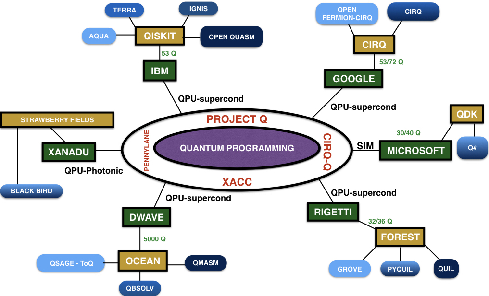

1 Department of Mechanical and Aerospace Engineering, New York University, New York 11201 USA
2 Department of Physics, New York University, New York 10012 USA
3 Courant Institute of Mathematical Sciences, New York University, New York 10012 USA
4 New York University, Abu Dhabi 129188, UAE
. . . (HPC) (DNS) . . . . !
. “”. Richard Feynman [1] . NISQ (Noisy Intermediate Scale Quantum) [2] 50 . ( .) “” . (QC) . . (CFD).
CFD (QCFD). . 2 QC . 3 QC. ( 4) ( 5). 5 . 6 QC . 7 QCFD 7.
QC . [3].
“” “ ” “ ” . “”. .
. . . Ψ . . (QED) Rydberg ( Majorana) (NMR) . . Hilbert ℍ. bra-ket Dirac “ket” |Ψ⟩ ℍ (∈ ℂn)
“bra” ⟨Ψ| = |Ψ⟩†. . Hilbert : |Ψ⟩ = (|ψ1⟩⊗... ⊗|ψn⟩) ∈ ℍ⊗n. ( ↑ ↓) |0⟩|1⟩ . ℍ ∈ ℂ⊗2
c1 c2 |c1|2 |c2|2 Born |0⟩ |1⟩. . ( .) : . . Hilbert Bloch 1. (2)
α γ ( ) β . “ ” Bloch.
| Quantum Logic Gate | Circuit Symbol | Operation |
| X(Pauli X) | |0⟩ → |1⟩ |1⟩ → |0⟩ | |
| Y(Pauli Y) | |0⟩ → i|1⟩ |1⟩ → −i|0⟩ | |
| Z(Pauli Z) | |0⟩ → |0⟩ |1⟩ → −|1⟩ | |
| H(Hadamard) | |0⟩ → |1⟩ → | |
| Rϕ(Phase Shift) | |0⟩ → |0⟩ |1⟩ → eiϕ|1⟩ | |
| CNOT | |q 1,q2⟩ → |q1,q2 ⊕q1⟩ | |
| SWAP | |q1,q2⟩ → |q2,q1⟩ | |
| To↑oli | |q1,q2,q3⟩ → |q1,q2,q3 ⊕q1 ⋅q2⟩ | |
AND NOT OR NAND To↑oli .
U (UU† = 𝕀) . ( NOT) . 1. [3].
. NOT . X σx Pauli. (q0)
|ψ⟩ = |0⟩+ |1⟩
X = σx = .
|0⟩ → |1⟩|1⟩ → |0⟩. (|c1|2 |c2|2) (c0) 2. . X NOT .
IBMQ Qiskit 3 4 . NOT |0⟩|1⟩ |ψ′⟩ = |0⟩+ |1⟩. . .
.
Bf: {0,1} {0,1}. 0 1 . 2 |ψin⟩ = |q1q2⟩ q1,q2 ∈ {0,1}. ( ) Ff |q1,q2⟩|q1,q2 ⊕ Bf (q1)⟩ ⊕ 2 ( [3] ). Bf(0) Bf(1) . 5 : Hadamard : |0⟩⊗|0⟩ ⊗|0⟩. Ff
Bf(0) Bf(1). . Bf Deustch-Josza Simon [3]. QC QC . .
: . QC 6 . QC: (1) (2) (3) . .
QC. :
(a) : Hubbard . Hamiltonian .
(b) : Schrödinger . Gross Pitaevski ( ) Monte Carlo .
. . . Boltzmann ODE Navier-Stokes.
. ODE/PDE .
. : (1) (2) .
(DNS) [4, 5, 6, 7, 8] (LES) [9, 10, 6] Navier-Stokes Reynolds (RANS) [6, 11] Boltzmann (LBM) [12, 13] . LBM Boltzmann “ ” . - 7. . LBM
v ρ S ρeq ( [13]). “” ( ) QC .
QC. QC ( QC ) QCs . (QLGA) [14, 15] .
1D. (x,v)i vi . 1D . LBM 7 .
QLGA . 1D N 2 (q) (l) (r) . 2 |ψ⟩i = α|q1q2⟩i + β|q1q2⟩i q1,q2 ∈ {l,r} {|lr⟩,|ll⟩,|rr⟩,|rl⟩}. Ŝ Â. L R ( ) ( p)
|L|2 + |R|2 = 1 = |𝜃|2 𝜃 . :
| Ψ(r,t + 1; →) | = LΨ(r −1,t; →) + RΨ(r + 1,t; ←) | (10) |
| Ψ(r,t + 1; ←) | = LΨ(r + 1,t; ←) + RΨ(r −1,t; →). | (11) |
L R p . Schrödinger. Dirac Schrödinger δr → 0 δr2 → 0 δt → 0 Chapman-Enskog [14, 16, 17].
. QLGA [16, 17, 18, 19, 20] Burgers [21, 22, 23, 24].
. LBM . 4 4 24 . QC 4 QCs . N Nq ( ) QC NT = N ∗Nq . Hilbert 2NT 2Nq Hilbert C qi
Schrödinger (Â) (Ŝ)
: Bravais R r Bloch ( ki ≤ N ∗(period)). [22] .
(a) R = ĉR†ĉR. QCs NMR-QC ( ) ( ).
(b) d (ξ ξv)
| ξ(r,t) | = lim d→0 ∑ ki,R1RN mTr[ρ(t)Rk i], | (16) |
| ξ(r,t)v(r,t) | = lim d→0 ∑ ki,R1RN mv2r (RmodNq)Tr[ρ(t)Rki]. | (17) |
( ) .
0 ≤ (ϕ,λ) < 2π 0 ≤ 𝜃 ≤ π. : (1) LBM QC (2) (3) LBM LBM . .
LBM Dirac [12, 26, 27]. . QC QC . (7) “ Dirac Majorana” [28]
( Cli↑ord Pauli) M Hermitian. Cli↑ord ( ℝ3 Pauli) . “ Fock” . 1D |Ψ(x,t)⟩i = ∫ dxP(x)|x⟩i P(x) . ( Fock 2 2D |Ψ(x,t)⟩i = ∫ dx1dx2P(x1, x2)|x1⟩|x2⟩.) . “ ” |Ψ⟩ = ∑ iPi|s⟩i ⊗|Ψ(x,t)⟩. Dirac [27]:
Zi Xi Pauli ith σpb . Ŝ “ ” ( [27] ) Ŝ e−iŜΔt∕ℏ = eÛ1+αÛ2. Lie-Trotter-Suzuki U3. . . - [27]. QC QCs .
d- (d+1)- . Monte-Carlo [29, 30] - [31, 32] . LQC 1 LQC2 .
Tr(e−Hβ) Feynman
(d+1)- . 2D 1D . ( d →d [33].) . .
( ) . .
. : (1) (2) (3) . QC. .
ODE/PDE . C++ int a = 10; a 10.
. QC 10 a. . . :
(1) : [34, 3] . . 1 [35] QCs ( IBMQ) . 0 0. (i) (2 + i) i 1 ( ). N log 2N 2 :
1 [35] 8. ( ,, and ). ( ) Qiskit— IBM Quantum Experience— 9 .
: c1,c2cn
: Uload , |Ψ⟩f inal = c1|00...0⟩+ c2|00...1⟩+ ...+ cn|11...1⟩
(Uzy)i ← Uy ⊗Uz
U ← (Uzy)i ⊗U
U = (Uzy)n ⊗⊗(Uzy)1
Uload = U†
|Ψf inal⟩ = Uload|Ψf inal⟩ = c1|00...0⟩+ c2|00...1⟩+ ... + cn|11...1⟩
return Uload, |Ψf inal⟩
DISENTANGLE(|Ψ⟩temp):
|Ψ⟩local = |Ψ⟩temp ← c1|00...q1⟩+ c2|00...q2⟩+ ... + cn|11...qn⟩
return |Ψ⟩local ← c1|00...⟩⊗|q1⟩+ c2|00...⟩⊗|q2⟩+ ... + cn|11...⟩⊗|qn⟩
(2) : ket . 10 1010. |ψ⟩ = |ϕ⟩⊗(|1⟩+ |0⟩+ |1⟩+ |0⟩). 4 |ψ⟩ = (|0⟩|0⟩⊗|1⟩+ |0⟩|1⟩⊗|0⟩+ |1⟩|0⟩⊗|1⟩+ |1⟩|1⟩⊗|0⟩) 1010. Controlled-SWAP X H To↑oli 10. ( [36].)
11 ρ = ∑ ipi|ψ⟩i⟨ψ|i . 11 1010 . 6 4 . (N) log 2(N) . .
. . von Neumann z |0⟩|1⟩. . .
( ). .
QM: A ψi “a” :
-
“a”
“a” |ψ⟩. “” . . {|ψi⟩}.
. . . pα {|ψα⟩} ρ = ∑ αpα|ψα⟩⟨ψα|. ρ
-
“a”
Tr(ρ) = 1 ( ) . : POVM (Positive Operator Valued Measure). POVM {PV Ma} ≡ {Aa†Aa} ⟨ψi|PV Ma|ψi⟩ = ⟨ψi|Aa†Aa|ψi⟩ = P(a) ≥ 0 ∑ a PV Ma = ∑ aAa†Aa = 𝕀. POVM = Aa.
. POVM . POVM {PV Ma, PV Mb and (PV Mc = 𝕀−(PV Ma + PV Mb))} . . . . . .
. . . POVM . {𝕀∕2 X/2 Y/2 Z/2 }
Tr(Xρ). . . 1∕ N Gaussian N . . . [40]
- Bayesian.
| # | Algorithm | Description/Used in | Complexity/Speed-up |
| 1 | Quantum Teleportation & | Inter-circuit data communication & | - |
| Entanglement [3] | a fundamental block of many algorithms | ||
| 2 | Superdense Coding [3] | Data compression & communication | Compression Ratio 2:1 |
| 3 | Quantum Fourier Transform | DFT, Phase Estimation, Period Finding, | Q: [Θ(n2),Θ(n log n)] |
| (QFT) [3] | Arithmetic, Discrete log & spectral methods | C: Θ(n2n) (n=#gates) | |
| 4 | Quantum Phase Estimation [3] | Quantum phases, Order Finding, Shor’s | O(t2) operations** |
| Algorithm, HHL, Amplitude Amplification | t = n + | ||
| & Quantum Counting [41] | |||
| 5 | Grover’s Search [3, 42] & | Data search, Amplitude Estimation, Function | Q: O() |
| Amplitude Amplification [43] | minima, approx. & Quantum counting | C: O(N) (N=#ops) | |
| 6 | Matrix Product Verification [44] | Verifies AB=C? (n×n matrices) | Q: ≤O(n5∕3)); C: O(n2) |
| 7 | Quantum Simulation [19, 3] | Integrates Schrödinger equation, HHL, | superpoly |
| All Hamiltonian system simulations e−iHt∕ℏ | poly(n,t): n=dof, t= time | ||
| 8 | Gradients [45, 46] | Computes gradients, convex optimisation | quadratic - superpoly |
| volume estimation, minimising quadratic forms | |||
| 9 | Partition Function [46] & | Evaluate/approx partition functions | quadratic - superpoly |
| Sampling | Pott’s, Ising Models & Gibbs sampling | ||
| 10 | Linear Systems & | Solves AX=b for eigen values & vectors | superpoly - exponential |
| HHL Algorithm [47, 46] | ODEs, PDEs, simultaneous eqns. | ||
| Optimisation, Finite Element Methods etc | |||
| 11 | ODE [48, 46] | Integrates = α(t)(x) + β(t) & similar forms | superpoly - exponential |
| 12 | Wave Equation [49] | Integrates = c2∇2ϕ & similar forms | superpoly - exponential |
| 13 | PDE / Poisson Equation [50, 51, 46] | Integrates −∇2ϕ(x) = b(x) and | superpoly - exponential |
| PDEs of similar forms: Dϕ(x) = b(x) | |||
| 14 | QFT Arithmetic [52] | QFT based: + , - , * , mean , weighted sum | superpoly - exponential |
| 15 | Function Evaluation [53] | (Ex) inverse, exponentiation.. etc | varies |
| for State Loaded data | |||
| 16 | VQE and QAOA [25] | Computes optimisation type problems | varies |
| 17 | Quantum Annealing [54] | Computes optimization type problems | varies |
Q/C-/ VQE- QAOA-
** t = n 𝜖.
( 12) IBMQ. 1/2 . 13 (≈ 0.5) |00⟩|11⟩. . .
. [46, 40, 3, 25, 55]. 2 . Stokes 1D ( )
:
A - : u(x) . .
B - : :
- : FEM . . Poisson. #13 . FEM #10 (HHL) = Alg #3 + Alg #4 + Alg #7. . [50].
- : #3 (QFT) HHL . .
- : # 5 .
C - : .
. Navier-Stokes. DNS FFTW . - FFTW QFT . QFT .
Fourier [3] Fourier FFTW . . DFT f
f [ j] = f [0], f [1], f [2], f [3] Fourier F[k] = F[0], F[1], F[2], F[3]. Fourier (QFT)
ωjk = exp2πi
|0⟩,|1⟩,|2⟩,|3⟩ |00⟩,|01⟩,|10⟩,|11⟩.
| β0 | = [α0 + α1 + α2 + α3] | ||
| β1 | = [α0 + iα1 −α2 −iα3] | ||
| β2 | = [α0 −α1 + α2 −α3] | ||
| β3 | = [α0 −iα1 −α2 + iα3], |
UQFT . ω = eiπ∕2
QFT 2 14.
9 QFT . Fourier β0 = 0.574,β1 = 0.037,β2 = 0.306,β3 = 0.138 QFT 15.
QFT β0 = 0.569,β1 = 0.037,β2 = 0.311,β3 = 0.083. QFT DFT.
. Hamiltonian Schrödinger ( [57, 58]. . ≈ 1023 . . . QC .
Hamiltonian. Hamiltonian Bose-Einstein Schrödinger :
. QC ( #7) [3] . Trotter ( Lie-Trotter-Suzuki). P Q Hermitian ( ) t
:
(41) |
ℋBEC ℋBEC = ∑ i=1nℋi Hamiltonian Hilbert . [ℋi,ℋj] = 0∀i, j ℏ = 1
:
. QC.
Landau . ODEs PDEs :
1 2 . .
Madelung BEC . Gross-Pitaevskii
(46) |
: (a) BEC T ∼ 0 ΨBEC ≈ Ψcond. (b) . (c) Uint = Uδ(r −r′). . [57, 58].
. l .
usa uf . QC Biot-Savart
Landau . fmf fT. . ( F = fmf + fT:
. CFD Stokes Gauss-Seidel Jacobi.
Ax = B HHL. . x 0. . QC .
A. (VQE). . . VQE . . [25, 40, 59].
- P |ψp⟩. |ψp⟩ P|ψp⟩ = p|ψp⟩ p . P Hamiltonian Hermitian . Hamiltonian ⟨ψ|ℋ|ψ⟩ ≥ 0. pmin ≤ ⟨ψ|ℋ|ψ⟩ (≥ 0) 2.
- QPU CPU .
B. (QAOA): . QAOA . x = x1...xn xi ∈ {0,1} E(x) . E(x) : {0,1}nℝ. QAOA [60, 40, 25] α
C. : ( ) DWave. . . Monte Carlo “” 16.
DWave . [61, 54] . Navier-Stokes [62]. NS Ax = B . (QUBO) DWave.
DWave 5000 . .

(a) (b) QCs . . QCs (QPU) . QPU .
QC. QC . . 17. . Qiskit IBMQ transmon. cbit. .
IBMQ 54 .
- QFT: DNS FFT . 54 FFT 254 ≈ 1016 . DNS .
-
DNS: 54
- 1D: ≤ 1016
- 2D: ≤ 108 ×108
- 3D: ≤ 105 ×105 ×105
DNS .
DNS.
QCFD. . QCFD. QCs IBMQ . QC . QC . QCFD . QPU CPU GPU. .
IBM Q IBM Q Experience . IBM IBM Q. Jörg Schumacher Dhawal Buaria Kartik P Iyer .
References
[1]
R.P. Feynman, Int. J. Theor. Phys. 21, 467 (1999).
[2]
J. Preskill , Quantum 2, 79 (2018).
[3]
M.A. Nielsen and I.L. Chuang, Quantum Computation and
Quantum Information, 10th Anniversary Edition, (Cambridge
University Press, 2002).
[4]
S.A. Orszag and G.S. Patterson, Jr, Phys. Rev. Lett. 28, 76
(1972).
[5]
R.S. Rogallo, National Aeronautics and Space
Administration, 81315 (1981).
[6]
S.B. Pope, Turbulent Flows (Cambridge University Press,
2001).
[7]
P.K. Yeung, D.A. Donzis and K.R. Sreenivasan, Phys. Fluids,
17, 081703 (2005).
[8]
K.P. Iyer, J.D. Scheel, J. Schumacher and K.R. Sreenivasan,
Proc. Natl. Acad. Sci. 117, 7594 (2020).
[9]
J. Smagorinsky, B. Galperin and S. Orszag, Evolution of
Physical Oceanography (Cambridge University Press, 1993).
[10]
C. Meneveau and J. Katz, Annu. Rev. Fluid Mech. 32, 1
(2000).
[11]
P.A. Davidson, Turbulence: An Introduction for Scientists and
Engineers, 2nd Edition (Oxford University Press, 2015).
[12]
S. Succi, R. Benzi and F. Higuera, Physica D 47, 219 (1991).
[13]
S. Succi, The Lattice Boltzmann Equation for Fluid Dynamics
and Beyond (Oxford University Press, 2001).
[14]
D.A. Meyer, J. Stat. Phys. 85, 551 (1996).
[15]
D.A. Meyer, Phil. T. Roy. Soc. A 360, 395 (2002).
[16]
B.M. Boghosian and W. Taylor IV, Int. J. Mod. Phys. C 8, 705
(1997).
[17]
B.M. Boghosian and W. Taylor IV, Phys. Rev. E 57, 54 (1998).
[18]
B.M. Boghosian and W. Taylor IV, Physica D 120, 30 (1998).
[19] S. Lloyd, Science 273, 1073 (1996).
[20]
D.S. Abrams and S. Lloyd, Phys. Rev. Lett. 79, 2586 (1997).
[21]
J. Yepez, Int. J. Mod. Phys. C 9, 1587 (1998).
[22]
J. Yepez, Phys. Rev. E 63, 046702 (2001).
[23]
J. Yepez, Int. J. Mod. Phys. C 12, 1285 (2001).
[24]
J. Yepez, J. Stat. Phys. 107, 203 (2002).
[25]
IBM, IBMQ Qiskit Textbook,
https:qiskit.org/textbook/preface.html
[26]
R. Benzi, S. Succi and M. Vergassola, Phys. Rep. 222, 145
(1992).
[27]
A Mezzacapo, M. Sanz, L. Lamata, I.L. Egusquiza, S. Succi
and E. Solano, Sci. Rep. 5, 13153 (2015).
[28]
F. Fillion-Gourdeau, H.J. Herrmann, M. Mendoza, S.
Palpacelli and S. Succi, Phys. Rev. Lett. 111, 160602 (2013).
[29]
S.L. Sondhi, S.M. Girvin, J.P. Carini and D. Shahar, Rev. Mod.
Phys. 69, 315 (1997).
[30]
T.H. Hsieh, Student Review (2) 1, (2016).
[31]
O. Aharony, S.S. Gubser, J. Maldacena, H. Ooguri and Y. Oz,
Phys. Rep. 323, 183 (2000).
[32]
A.M. Polyakov, Contemp. Concepts Phys. 3, 1 (1987).
[33]
R.D. Somma, C.D. Batista and G. Ortiz, Phys. Rev. Lett. 99,
030603 (2007).
[34]
M. Plesch and Č. Brukner, Phys. Rev. A 83, 032302 (2011).
[35]
V.V. Shende, S.S. Bullock and I.L. Markov, IEEE TCAD 25,
1000 (2006).
[36]
J.A. Cortese and T.M. Braje, arXiv preprint,
arXiv:1803.01958, (2018).
[37]
K. Vogel and H. Risken, Phys. Rev. A 40, 2847 (1989).
[38]
U. Leonhardt, Measuring the quantum state of light 22,
(Cambridge University Press, 1997).
[39]
W. Nawrocki, Quantum standards and instrumentation
(Springer, Heidelberg, 2015).
[40]
P.J. Coles et al., arXiv preprint, arXiv:1804.03719, (2018).
[41]
G. Brassard, P. Hoyer, M. Mosca and A. Tapp, International
Colloquium on Automata, Languages, and Programming 820,
(Springer, 1998).
[42]
L.K. Grover, Phys. Rev. Lett. 79, 325 (1997).
[43]
G. Brassard, P. Hoyer, M. Mosca and A. Tapp, Contemp.
Math. 305, 53 (2002).
[44]
H. Buhrman and R. palek, Proc. 17th Annual ACM-SIAM
Symp. on Discrete Algorithm (Society for Industrial and
Applied Mathematics, 2006).
[45]
S.P. Jordan, Phys. Rev. Lett. 95, 050501 (2005).
[46]
S. Jordan, Quantum Algorithm Zoo,
https://quantumalgorithmzoo.org/.
[47]
A.W. Harrow, A. Hassidim and S.Lloyd, Phys. Rev. Lett. 103,
150502 (2009).
[48]
D.W. Berry, J. Phys. A-Math. Theor. 47, 105301 (2014).
[49]
P.C.S. Costa, S. Jordan and A. Ostrander, Phys. Rev. A 99,
012323 (2019).
[50]
Y. Cao, A. Papageorgiou, I. Petras, J. Traub and S. Kais,New
J. Phys. 15, 013021 (2013).
[51]
J.M. Arrazola, T. Kalajdzievski, C. Weedbrook and S. Lloyd,
Phys. Rev. A 100, 032306 (2019).
[52]
L. Ruiz-Perez and J.C. Garcia-Escartin, Quantum Inf.
Process. 16, 152 (2017).
[53]
S. Hadfield, arXiv preprint, arXiv:1805.03265, (2018).
[54]
DWave,
https://docs.dwavesys.com/docs/latest/c_gs_2.htmll.
[55]
A. Montanaro, NPJ Quantum Inf. 2, 1 (2016).
[56]
G. Xu, A.J. Daley, P. Givi and R.D. Somma, AIAA J. 56 687,
(2018).
[57]
C.F. Barenghi, L. Skrbek and K.R. Sreenivasan, Proc. Natl.
Acad. Sci. 111, 4647 (2014).
[58]
C.F. Barenghi, V.S. Lvov and P. E. Roche, Proc. Natl. Acad.
Sci. 111, 4683 (2014).
[59]
A. Peruzzo, et al., Nat. Commun. 5, 4213 (2014).
[60]
E. Farhi, J. Goldstone and S. Gutmann, arXiv preprint,
arXiv:1411.4028, (2014).
[61]
D.A. Battaglia, G.E. Santoro and E. Tosatti, Phys. Rev. E 71,
066707 (2005).
[62]
N. Ray, T. Banerjee, B. Nadiga and S. Karra, arXiv preprint,
arXiv:1904.09033, (2019).